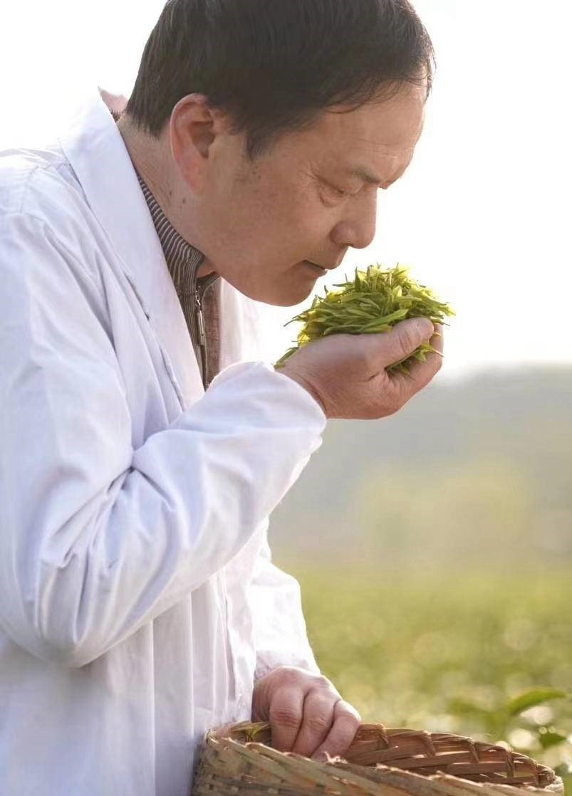

南京非遗雨花茶继承人简介
陈盛峰，南京雨花茶制作技艺的第五代传承人，是中国传统绿茶“雨花茶”的非物质文化遗产代表性传承人。自1994年毕业于江苏省句容农业学校后，陈盛峰便投身于茶产业，致力于雨花茶的手工制作技艺传承和创新。他从茶树种植、采摘到茶叶的制作，每一个环节都严格把控，尤其以“抓条”技艺而闻名，这一技巧被誉为“手中的芭蕾舞”。在他的手中，雨花茶的制作流程保持着传统工艺的精髓，确保茶叶的外形紧细圆直，滋味丰富、回甘生津。
除了传承手工制茶技艺，陈盛峰还在推动茶产业现代化方面做出了重要贡献。他不仅创建了800亩的雨花茶生产基地，还通过茶产业推动了乡村振兴，改善了当地农民的生活条件。在他的带领下，南京雨花茶已成为江苏省的重要茶叶品牌，为乡村经济带来了巨大的发展潜力。
陈盛峰的茶艺和对茶文化的热爱，使得他不仅是雨花茶技艺的守护者，也是其未来发展的推动者。他深知“雨花茶是我的事业，也是我的生命”，并且将继续致力于将这份文化传承给下一代，让雨花茶的香气飘扬世界。